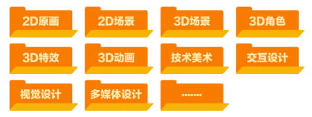

Unity 美术基础
本页面由胡嘉悦于 2025.10.6 编辑并发布
游戏美术的细分方向
某游戏厂商2025的美术训练营开设了以下方向：

如果你和我一样对技术美术感兴趣，以下是一些经典的入门教程:
- Technical Art 技术美术会做什么_Youtube
- 《Unity Shader入门精要》源代码
- Catlike Coding - Unity C# 和着色器教程
- GAMES101-现代计算机图形学入门-闫令琪_bilibili
- 技术美术百人计划_bilibili
如何获取游戏资产？
购买版权
-
Unity Asset Store Unity官方商城
-
Sketchfab 模型
使用免费开源资产
- OpenGameArt.org / Kenney 资产包
- ambientCG / CC0 Textures 材质贴图
- Poly Haven HDRI 贴图
- Freesound 音频
也可以自己制作
模型、材质、贴图的导入与设置
下文主要整理了一些教程的链接，这些教程的原文内容详尽清晰，这里就不再重复阐述，仅在部分章节中补充了一些的实践笔记。
从 DCC 软件导入模型的流程
如果模型需要从DCC软件（blender、3DMax）导出为FBX，再导入Unity，可以参考这篇教程。
Unity模型导入面板和材质面板讲解
当资源包中已包含贴图与 FBX 模型时，可参考这篇文章完成 FBX 导入设置，并了解如何在 Unity 中将贴图分配至材质的相应通道。
观察你下载的FBX的贴图名称，如果是 Base Color（基础色）、Metallic (金属度)，在材质面板选择Metallic金属度工作流，如果是 Diffuse（漫反射）、Specular（高光），选择Specular金属度工作流。
为了节约空间，smoothness一般通过读取其他贴图的A通道获得而不是使用一张单独的贴图


Unity的贴图设置面板讲解
一张贴图通常包含 RGBA 四个通道，不同类型的贴图会在各通道中存储不同的信息，解读方式也对应不同。阅读这篇文章可以帮助你理解并正确设置贴图参数。
- 法线贴图的TextureType 要设置为Normal Map
- 什么时候需要勾选sRGB?
- 颜色类贴图 → 需要，是看见的物体颜色，如基础色Basecolor / Albedo / Diffuse、自发光颜色Emission
- 数据类贴图 → 不需要，是参与计算的物理值，如金属度、AO等
- 草、头发等透明贴图，由Alpha 控制可见与透明区域，建议勾选 Alpha Is Transparency

灯光、雾效设置与后处理
Unity灯光官方文档
在Hierarchy面板右键，或者菜单 GameObject > Light 中选择所需类型的灯光（例如 Directional Light 平行光、Point Light 点光源等），然后将光源放置在场景中合适的位置即可。

在简单场景中，实时光照（Realtime Lighting）已经足够；但当你开始追求更高的性能或更真实的光照效果时，就需要了解以下系统：
- 烘焙光照（Baked Lighting）：将静态物体的光照提前计算并存储，显著提高性能。
- 光照探针（Light Probe）：用于让动态物体（会移动的角色、道具）在烘焙场景中也能获得环境光照的影响。
- 反射探针（Reflection Probe）：为物体提供环境反射，例如金属表面或玻璃的镜面感。
Unity的天空盒和雾效
- 顶部 window → Rendering → Lighting 打开 Light 设置面板

- 选择 Environment 选项卡，可以在这里设置HDRI天空盒及Fog雾效

- 请确保在Scene窗口顶部勾选了Fog的预览图层

Unity后处理详解
这篇文章详细介绍了如何在Unity开启后处理效果，已经每个后处理功能对应的效果（需要在国内IP访问）。
后处理（Post-Processing）指在渲染完成后，整体调整最终画面的光感、色彩和氛围（类似滤镜）。
最常用的后处理是 Tonemapping + Bloom

Tonemapping —— 把场景中的HDR 高动态亮度压缩到显示设备的0–1 范围，防止过曝，同时保持亮暗层次，颜色更“电影化”。
几乎所有使用 HDR 光照或 Bloom 的项目都建议开启！

Tonemapping中 的 ACES、Filmic、Neutral 等曲线都会非线性地压缩亮部、抬暗部，所以强烈建议在项目初期就启用目标Tonemapping曲线，在开启的基础上再进行其他曝光和颜色的调整。
Bloom（泛光 / 光晕）—— 在明亮区域（如灯光、反射、水面、霓虹）周围产生柔和光晕，需要在URP设置和相机设置中开启HDR
Unity UGUI
推荐阅读Unity UI 官方文档
Canvas 自适应
导出的游戏可能会在不同尺寸的屏幕下显示，所以需要选择适配方式
推荐在Canvas下使用 Canvas Scale 中的 Scale With Screen Size 模式，并设置为 1920 x 1080。
或者参考这篇文章Unity Canvas Scaler 组件实现UI自适应
应该在UI排版初期就考虑好画布大小和自适应方式，以免出现因为调整屏幕大小比例UI满屏乱飞的情况。

在Game窗口可以改变预览的屏幕尺寸：

其他
在Unity内构建3D关卡原型：ProBuilder插件

- ProBuilder 官方文档
- Pro Builder 使用教学_youtube
在 Unity 中使用排序图层（Sorting Layer）
在 2D 项目中，当多个元素重叠时可能出现前后层级显示不正确的情况。这篇文章系统介绍了如何通过 Sorting Layer 调整素材的渲染层级。